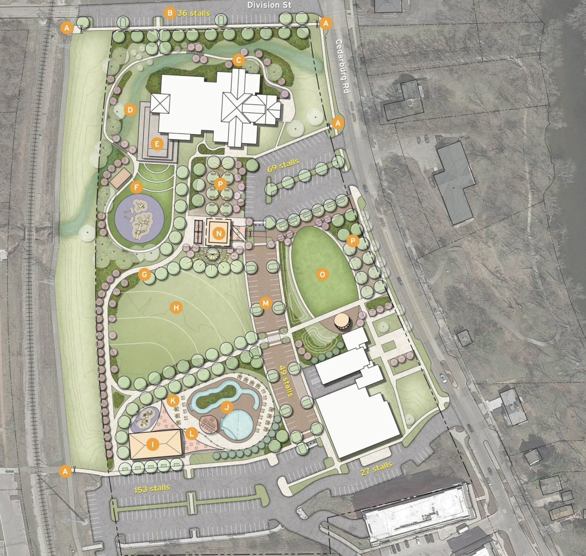
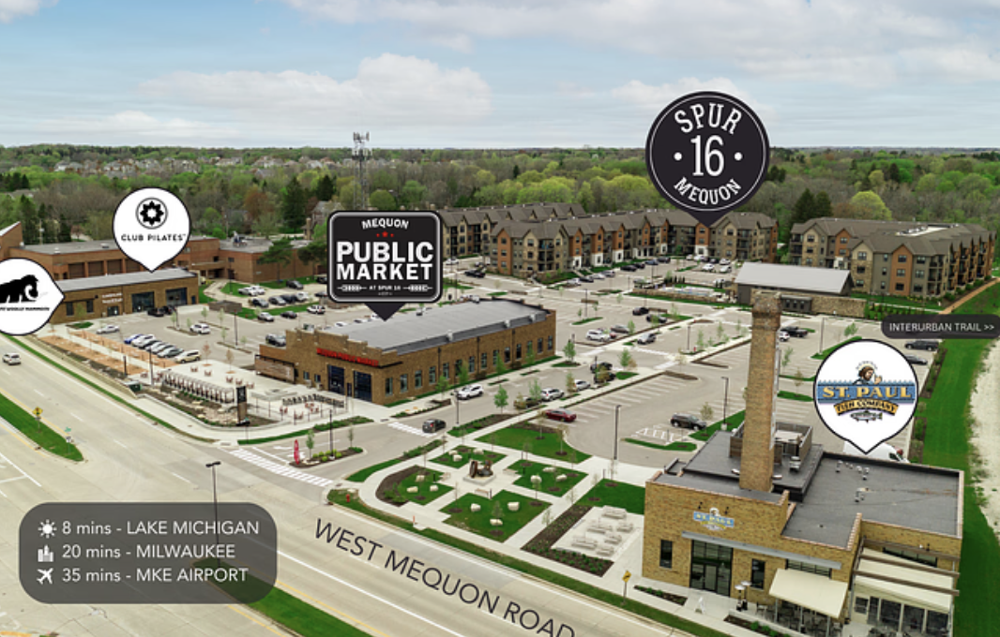

The Civic Campus
The Mequon Civic Campus includes City Hall, the municipal pool, the Frank L. Weyenburg Library, and Mequon Community Park with Rennicke baseball diamond. The campus begins at the northern edge of Town Center. City Hall has a new plaza that’s used for performances and celebrations, a space for cultural events. The Weyenburg Library hosts readings and performances in a small space.
In 2025, Mequon held meetings to get input on evolving the Civic Campus into Mequon Commons. On September 17th, the community was introduced to five concepts for the space. If this development happens as proposed, it holds the chance that it will create shared public spaces in which people can feel 'in-place'.
To the West
After Town Center was launched, several TID 3 developments started along Mequon Road to the west.
A small industrial building became the St. Paul Fish Company. A Mequon city garage became the Mequon Public Market. Another city building houses a fitness studio.
To the north of the commercial spaces is the four-building Spur 16 apartments. This development cluster is adjacent to the Ozaukee InterurbanTrail and the Mequon Civic Campus.
To the south of Mequon Road are more TID 3 developments… Foxtown Brewing, in an existing structure that was formerly a brewery Rennard’s, an upscale restaurant named after the 19th Century tavern on the southeast corner of Cedarburg and Mequon Roads. Spectrum Investments apartments townhouses mixed commercial/rental buildings 16 row houses with space for several more.
At the intersection of Mequon Road and Buntrock Road, there’s an Outpost Co-Op.